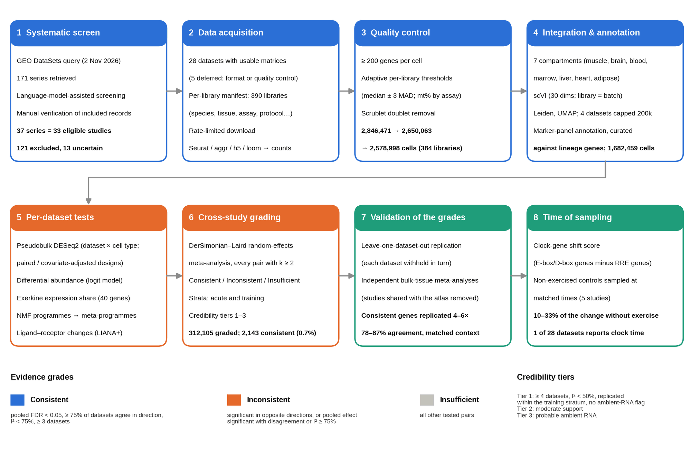
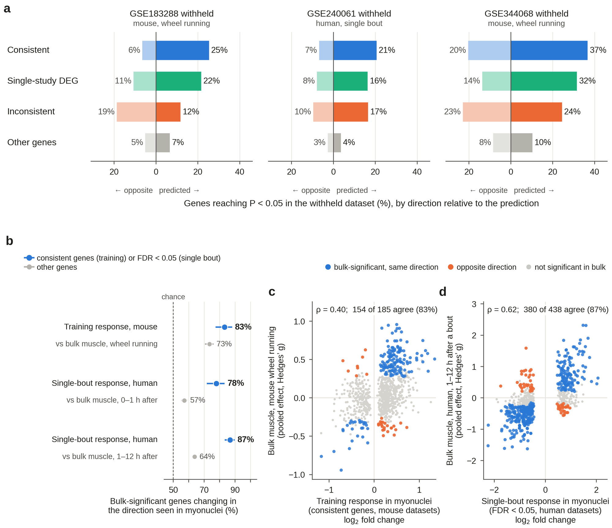
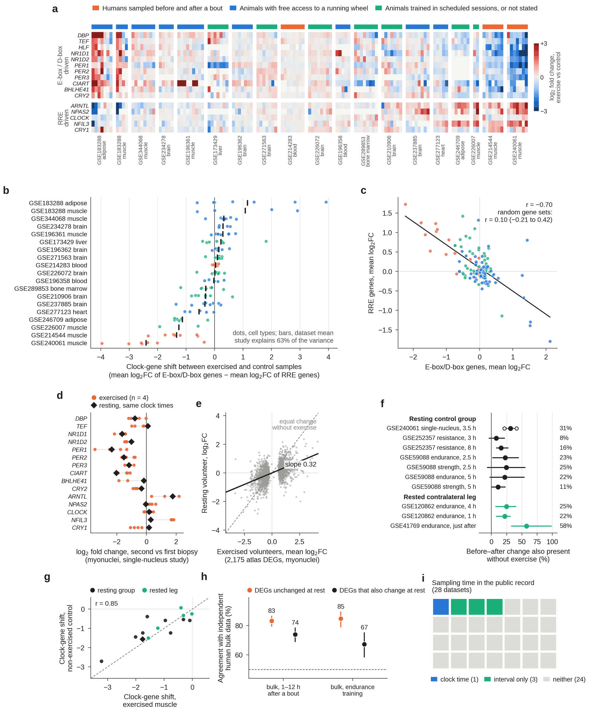
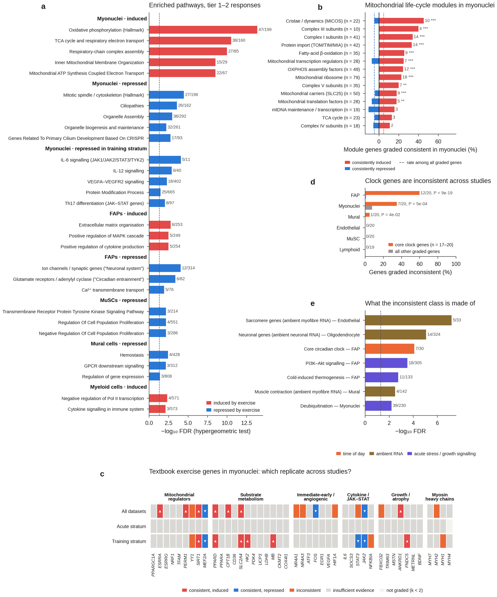

Li, C. A reproducible core of the cellular response to exercise and its confounding by sampling time. Manuscript in preparation (2026).
Li, C. & Su, Q. Uniformly re-analysed public omics data and graded meta-analyses of exercise responses in humans and rodents. Preprint at bioRxiv https://doi.org/10.64898/2026.11.06.764830 (2026).